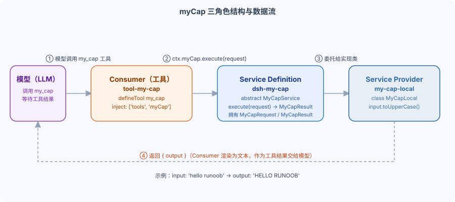

DeepSeek Harness Hands-On: Write a Replaceable Capability
The previous chapter introduced the concept of the three roles; in this one, we will turn it into code following the official tutorial.
We're going to implement a capability called myCap: it takes a piece of text as input and outputs everything in uppercase. It's small enough to be understood at a glance, yet fully covers the three packages: Definition, Provider, and Consumer.
three步走：Service Definition（Abstract class + type)→ Service Provider（Concrete Subclass）→ Consumer（defineTool）。
Finally, load the Provider and Consumer together in cordis.yml.
Step 1: Write the Service Definition
Service Definition declares the capability itself: what the service is called, how it is invoked, and what the request and result types are.
It contains no implementation logic, only one abstract method and two interfaces.
The abstract class MyCapService inherits from Service, throughsuper(ctx, 'myCap')Register as a naming service.
The declare module declaration merging gives ctx.myCap its types; this technique was covered in Part 14.
Example
import { Service, type Context } from '@deepseek-ai/cordis'
// Declaration merging: make ctx.myCap have type hints in TypeScript
declare module '@deepseek-ai/cordis' {
interface Context {
myCap: MyCapService
}
}
// Abstract class: The Definition package only declares contracts, not implementations.
export abstract class MyCapService extends Service {
constructor(ctx: Context) {
super(ctx, 'myCap') // Register as a named service ctx.myCap
}
/** Execute the capability. */
abstract execute(request: MyCapRequest): Promise<MyCapResult>
}
// Request type: the caller must provide input
export interface MyCapRequest {
input: string
}
// Result type: capability returns output
export interface MyCapResult {
output: string
}
abstract execute is the only abstract method, and the Provider must implement it.
MyCapRequest has an input field, and MyCapResult has an output field.
The request and result types are owned by the Definition package, and both Provider and Consumer import them from it.
Step 2: Write the Service Provider
The Service Provider inherits the abstract class and fills in the real behavior.
MyCapLocal converts input to uppercase and returns it.
export const name declares the plugin name; in apply, register the service implementation via ctx.plugin(MyCapLocal).
Example
import type { Context } from '@deepseek-ai/cordis'
import { MyCapService, type MyCapRequest, type MyCapResult } from '@deepseek-ai/dsh-my-cap'
// Implementation class: only depends on the Definition package
class MyCapLocal extends MyCapService {
async execute(request: MyCapRequest): Promise<MyCapResult> {
// Local provider behavior.
return { output: request.input.toUpperCase() }
}
}
export const name = 'my-cap-local'
export function apply(ctx: Context) {
// Load the implementation class as a plugin, register it as the actual service for ctx.myCap
ctx.plugin(MyCapLocal)
}
The Provider only depends on the abstract classes and types in the Definition package.
It doesn't care how the model calls it, nor what the tool looks like.
If you want to switch to another implementation later, for example one that runs on a remote server, you only need to write another Provider subclass.
Step 3: Write the Consumer side
The Consumer wraps the capability into a tool that the model can call.
The inject declaration depends on tools and myCap, ensuring that apply only runs after both services are ready.
defineTool declares the tool schema; once the model sees the my_cap tool, it will pass parameters according to parameters.
In execute, call ctx.myCap.execute and return the result as the tool output.
Example
import type { Context } from '@deepseek-ai/cordis'
import { defineTool } from '@deepseek-ai/dsh-tools'
export const name = 'tool-my-cap'
// Dependency declaration: tools provides the registration entry, myCap provides the service implementation.
export const inject = ['tools', 'myCap']
export function apply(ctx: Context) {
ctx.tools.register(defineTool({
name: 'my_cap', // Tool name for the model
description: 'Execute my capability.',
// Parameter schema: the model generates parameters according to it
parameters: {
input: { type: 'string', required: true },
},
// Output schema and rendering method
output: {
schema: { type: 'string' },
render: (_args, value) => [{ type: 'text', text: value }],
},
// Actual execution: call capability service
async execute(args) {
const result = await ctx.myCap.execute({ input: args.input })
return result.output
},
}))
}
The model doesn't know ctx.myCap directly; it only knows the my_cap tool.
The Consumer is the bridge between the two and is also responsible for rendering the result into text visible to the model.
myCap's three-role structure and data flow
When the three packages are assembled, data flows from the model, through Consumer and Definition, and lands in Provider.

The model first calls the my_cap tool; this step only happens at the Consumer layer.
Consumer Pass the parameterPackageCheng MyCapRequest，交Give ctx.myCap.execute(request)。
Definition delegates the call to the currently loaded Provider implementation.
After the Provider computes the result, it returns MyCapResult to the Consumer along the original path.
The Consumer renders the output into text and passes it to the model as the tool result.
Throughout the entire chain, when the Provider is swapped out, neither the Consumer nor the model notices.
Combining in cordis.yml
The three packages are just parts when written; you also need to load Provider and Consumer together in cordis.yml.
Loading the Provider gives ctx.myCap an implementation; loading the Consumer gives the model the my_cap tool.
Example
# Load Provider first so that ctx.myCap has an implementation.
- name: '@deepseek-ai/dsh-my-cap-local'
Reload Consumer so the model can use the my_cap tool
- name: '@deepseek-ai/dsh-tool-my-cap'
As for load order, Cordis sorts automatically by dependency, so whether Provider or Consumer comes first doesn't matter.
To switch to a different Provider, only change the first line; the Consumer stays unchanged.
Design Points
The official documentation offers three design principles; it's best to keep them in mind before writing a capability.
First, do not split preemptively.
Only put roles into separate packages when they need to evolve independently.
Simple tool plugins don't need to be split; having one package take on multiple roles is perfectly valid.
Second, the Service Definition has Request/Result types.
Provider and Consumer only depend on the Definition package, so the request and result types must be defined by Definition.
Third, explicit is better than implicit.
Implementations should handle defaults through an explicit resolve(request) step, rather than hiding a ?? default inside run().
The Bash seam is an example: workdir and timeoutMs of ShellExecRequest are optional; the tool layer first calls ctx.shell.resolve(request) to get a ShellExecSpec with all fields required, then passes it to run().
Don't quietly fill in defaults inside run(); resolve first, then execute—only then are the boundaries clear.
Summary and self-test
In one sentence: writing a replaceable capability = Definition abstract class + Provider subclass + Consumer tool, plus a cordis.yml.
Self-test question 1: Which package should MyCapRequest and MyCapResult be defined in?
Self-test 2: Is there a dependency between Provider and Consumer?
Self-test 3: Why isn't preventive splitting recommended for simple tool plugins?
other extensions